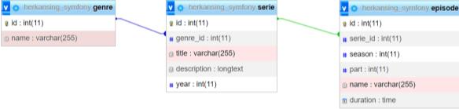
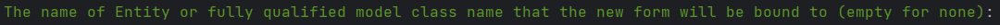
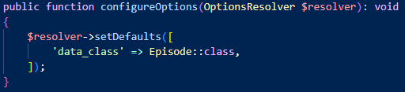
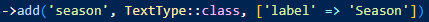
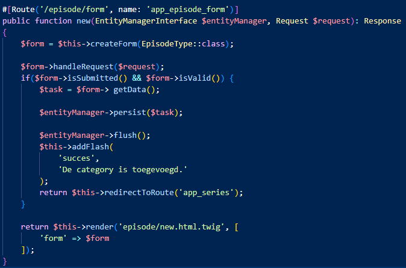
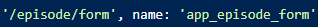
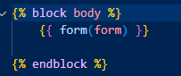
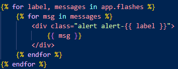

1. Eerste stap dat je moet doen is deze command in jou terminal in php storm/ VS code typen. (copieer wat in geel is getyped)
composer require symfony/asset-mapper symfony/asset symfony/twig-pack
Dit gaat wel lang duren dus geef het tijd.

1. Eerste stap dat je moet doen is deze command in jou terminal in php storm/ VS code typen. (copieer wat in geel is getyped)
composer require symfony/asset-mapper symfony/asset symfony/twig-pack
Dit gaat wel lang duren dus geef het tijd.
(kijk foto voor voorbeeld)

3. Derde moet in het backup file kijken toets om het database te importeren (het staan in /backups en heet series.sql)


4. Je moet Deze relaties met terminal doen zonder fouten
(Kijk Foto voor relaties)
Je moet in terminal dit typen: symfony console make:entity
En dan moet je entity maken met juiste relaties
TYPE ENTITY'S MET HOOFDLETTER (Genre) EN PROPERPY ZONDER HOOFDLETTER (genre)
Voorbeel van foto is:
Series heeft een relatie met Genre en property heet genre_id
LET OP: BIJ MAKEN VAN RELATIES TYPE JE ALLEEN MAAR "genre", SYMFONY DOET WEL _ID VOOR JOU
Episode heeft een relatie met Serie en property heet serie_id
5. Wanneer je klaar ben entity maken dit moet je alles migraten
6. Je moet twee controllers aanmaken voor deze toets in terminal (Copy groene text in terminal)
Symfony console make:controller ExampleController
Het controllers dat nodig zijn is:
LET OP. FORMS HEEFT OOK EEN CONTROLLER MAAR DAT KOMT STARTS
Dit is de code die je al hebt gekregen in jou HomepageController, dus kopieer en plak deze, maar verander gewoon deze volgende
namen:
"/genres moet je veranderen. "app_genre_show" moet je veranderen
"genres" moet je veranderen
"$genres" moet je veranderen. "Genre::class" moet je veranderen
NIET VERGETEN: HOVER OP "Genre::class" EN DAN MOET JE OP "import class" DRUKKEN OM VAN DATABASE OP TE NEMEN
'series/show.html.twig' moet je veranderen naar jou eigen controller.
"genres" en "$genres" moet je
veranderen
Dit is de code die je al hebt gekregen, dus kopieer en plak deze, maar verander gewoon deze volgende
namen:
"genre" en "genres" moet je veranderen
"genre" moet je veranderen
in "path('app_genre')" moet je "app_genre" veranderen
Om form te maken je in terminal dit typen:
symfony console make:form
LET OP: JE FORM NAAM MET MOET HOOFDLETTER BEGINNEN EN TYPE MOET OOK MET HOOFDLETTER BEGINNEN (KIJK ONDER DEZE ZIN OM TE KIJKEN HOE HET MOET)
ExampleType
Daarna moet je jou form met een specifiek database linken (kijk foto hieronder om te weten welke lijn dit vraagt)
Wanneer je dit heb gedaan krijg je een bestand die "Form" heet in jou "src" map. Nu ga je daarin coderen
Copy en Paste code is beneden deze zin
use symfony\Component\Form\Extension\Core\Type\TextType;
use symfony\Component\Form\Extension\Core\Type\SubmitType;
CODE OM TE KOPIEEREN IS ONDER DEZE ZIN
symfony console make:controller FormsController
Beneden deze text is hoe je database moet linken met deze forms bestand
Enige ding dat je hier moet veranderen is "Episode"
Beneden deze text is wat je moet kopieeren voor toets

#1- 'season' is het naam in database
#2- 'TextType:class' MOET hier zijn
#3- ['label' => 'Season'] is welke naam je het geeft voor forms
Beneden deze zin is hoe het hele route moet zien om forms te laten zien
Beneden deze zin is alles dat je moet veranderen om forms route
LET OP JE TYPE JE NAAM VOOR JE FORMS in "EpisodeType::class", NIET DATABASE.
redirectToRoute is gewoon homepage van je website
BIJ DEZE CODE ('form' => $form) HIERBOVEN GA JE DIT TYPEN IN JOU FORMS TWIG BESTAND
KIJK FOTO BENEDEN OM TE KIJKEN WAT JE MOET TYPEN IN JOU FORM TWIG BESTAND
Om het alert te krijgen dat je een nieuwe serie heb toegevoeg moet je terug naar homepage bestand en deze code typen helemaal boven
